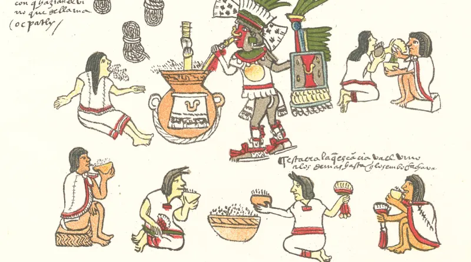

EL MEZCAL DE MEXICO
🔴LA HISTORIA DEL MEZCAL🔴

𝐄𝐧 𝐞𝐱𝐜𝐚𝐯𝐚𝐜𝐢𝐨𝐧𝐞𝐬 𝐢𝐧𝐢𝐜𝐢𝐚𝐝𝐚𝐬 𝐞𝐧 𝟏𝟗𝟗𝟒 𝐩𝐨𝐫 𝐚𝐧𝐭𝐫𝐨𝐩ó𝐥𝐨𝐠𝐨𝐬 𝐝𝐞 𝐥𝐚 𝐔𝐧𝐢𝐯𝐞𝐫𝐬𝐢𝐝𝐚𝐝 𝐍𝐚𝐜𝐢𝐨𝐧𝐚𝐥 𝐀𝐮𝐭ó𝐧𝐨𝐦𝐚
𝐝𝐞 𝐌é𝐱𝐢𝐜𝐨 𝐞𝐧 𝐥𝐚 𝐩𝐨𝐛𝐥𝐚𝐜𝐢ó𝐧 𝐝𝐞 𝐎𝐚𝐱𝐚𝐜𝐚, 𝐬𝐞 𝐨𝐛𝐭𝐮𝐯𝐢𝐞𝐫𝐨𝐧 𝐩𝐫𝐮𝐞𝐛𝐚𝐬 𝐩𝐚𝐫𝐚 𝐝𝐞𝐭𝐞𝐫𝐦𝐢𝐧𝐚𝐫 𝐪𝐮𝐞 𝐝𝐞 𝐥𝐚 𝐩𝐥𝐚𝐧𝐭𝐚 𝐝𝐞 𝐦𝐚𝐠𝐮𝐞𝐲
(𝐠𝐞𝐧𝐞𝐫𝐚𝐥𝐦𝐞𝐧𝐭𝐞 𝐜𝐨𝐧𝐨𝐜𝐢𝐝𝐚 𝐩𝐨𝐫 𝐬𝐮 𝐮𝐬𝐨 𝐩𝐚𝐫𝐚 𝐥𝐚 𝐞𝐥𝐚𝐛𝐨𝐫𝐚𝐜𝐢ó𝐧 𝐝𝐞𝐥 𝐩𝐮𝐥𝐪𝐮𝐞) 𝐚𝐧𝐭𝐢𝐠𝐮𝐚𝐦𝐞𝐧𝐭𝐞 𝐬𝐞 𝐨𝐛𝐭𝐮𝐯𝐨 𝐦𝐞𝐳𝐜𝐚𝐥
𝐂𝐨𝐧 𝐞𝐥 𝐟𝐢𝐧 𝐝𝐞 𝐚𝐦𝐩𝐥𝐢𝐚𝐫 𝐬𝐮 𝐢𝐧𝐯𝐞𝐬𝐭𝐢𝐠𝐚𝐜𝐢ó𝐧, 𝐥𝐨𝐬 𝐜𝐢𝐞𝐧𝐭í𝐟𝐢𝐜𝐨𝐬 𝐮𝐧𝐢𝐯𝐞𝐫𝐬𝐢𝐭𝐚𝐫𝐢𝐨𝐬 𝐝𝐞𝐬𝐚𝐫𝐫𝐨𝐥𝐥𝐚𝐫𝐨𝐧, 𝐞𝐧 𝟏𝟗𝟗𝟖, 𝐞𝐥 𝐩𝐫𝐨𝐲𝐞𝐜𝐭𝐨 𝐋𝐚 𝐫𝐮𝐭𝐚 𝐝𝐞𝐥 𝐦𝐞𝐳𝐜𝐚𝐥𝟑,
𝐚 𝐭𝐫𝐚𝐯é𝐬 𝐝𝐞𝐥 𝐜𝐮𝐚𝐥 𝐫𝐞𝐜𝐨𝐫𝐫𝐢𝐞𝐫𝐨𝐧 𝐜𝐨𝐦𝐮𝐧𝐢𝐝𝐚𝐝𝐞𝐬 𝐢𝐧𝐝í𝐠𝐞𝐧𝐚𝐬 𝐩𝐚𝐫𝐚 𝐢𝐝𝐞𝐧𝐭𝐢𝐟𝐢𝐜𝐚𝐫 𝐥𝐨𝐬 𝐥𝐮𝐠𝐚𝐫𝐞𝐬 𝐝𝐨𝐧𝐝𝐞 𝐬𝐞 𝐩𝐫𝐨𝐝𝐮𝐜𝐞 𝐦𝐞𝐳𝐜𝐚𝐥 𝐚 𝐥𝐚 𝐦𝐚𝐧𝐞𝐫𝐚 𝐚𝐫𝐭𝐞𝐬𝐚𝐧𝐚𝐥;
𝐬𝐞 𝐩𝐞𝐫𝐜𝐚𝐭𝐚𝐫𝐨𝐧 𝐝𝐞 𝐪𝐮𝐞 𝐚ú𝐧 𝐬𝐞 𝐝𝐞𝐬𝐭𝐢𝐥𝐚𝐛𝐚 𝐞𝐧 𝐨𝐥𝐥𝐚𝐬 𝐝𝐞 𝐛𝐚𝐫𝐫𝐨, 𝐲 𝐪𝐮𝐞 𝐞𝐬𝐭𝐚𝐛𝐚𝐧 𝐟𝐞𝐜𝐡𝐚𝐝𝐚𝐬 𝐡𝐚𝐜𝐢𝐚 𝐞𝐥 𝐚ñ𝐨 𝟒𝟎𝟎 𝐚. 𝐂.𝟒𝐀𝐜𝐭𝐮𝐚𝐥𝐦𝐞𝐧𝐭𝐞,
𝐞𝐥 𝐦𝐞𝐳𝐜𝐚𝐥 𝐜𝐮𝐞𝐧𝐭𝐚 𝐜𝐨𝐧 𝐃𝐞𝐧𝐨𝐦𝐢𝐧𝐚𝐜𝐢ó𝐧 𝐝𝐞 𝐎𝐫𝐢𝐠𝐞𝐧, 𝐪𝐮𝐞 𝐩𝐫𝐨𝐭𝐞𝐠𝐞 𝐥𝐚 𝐩𝐫𝐨𝐝𝐮𝐜𝐜𝐢ó𝐧 𝐝𝐞 𝐞𝐬𝐭𝐚 𝐛𝐞𝐛𝐢𝐝𝐚 𝐞𝐧 𝐥𝐨𝐬 𝐞𝐬𝐭𝐚𝐝𝐨𝐬 𝐝𝐞 𝐎𝐚𝐱𝐚𝐜𝐚,
𝐃𝐮𝐫𝐚𝐧𝐠𝐨, 𝐆𝐮𝐚𝐧𝐚𝐣𝐮𝐚𝐭𝐨, 𝐆𝐮𝐞𝐫𝐫𝐞𝐫𝐨, 𝐌𝐢𝐜𝐡𝐨𝐚𝐜á𝐧, 𝐒𝐚𝐧 𝐋𝐮𝐢𝐬 𝐏𝐨𝐭𝐨𝐬í, 𝐏𝐮𝐞𝐛𝐥𝐚, 𝐓𝐚𝐦𝐚𝐮𝐥𝐢𝐩𝐚𝐬 𝐲 𝐙𝐚𝐜𝐚𝐭𝐞𝐜𝐚𝐬. 𝐄𝐧 𝐞𝐥 𝟐𝟎𝟏𝟖 𝐬𝐞 𝐩𝐮𝐛𝐥𝐢𝐜ó 𝐞𝐧 𝐞𝐥 𝐃𝐢𝐚𝐫𝐢𝐨 𝐎𝐟𝐢𝐜𝐢𝐚𝐥 𝐝𝐞 𝐥𝐚 𝐅𝐞𝐝𝐞𝐫𝐚𝐜𝐢ó𝐧
𝐥𝐚 𝐢𝐧𝐜𝐨𝐫𝐩𝐨𝐫𝐚𝐜𝐢ó𝐧 𝐝𝐞𝐥 𝐞𝐬𝐭𝐚𝐝𝐨 𝐝𝐞 𝐀𝐠𝐮𝐚𝐬𝐜𝐚𝐥𝐢𝐞𝐧𝐭𝐞𝐬, 𝐌𝐨𝐫𝐞𝐥𝐨𝐬 𝐲 𝐄𝐬𝐭𝐚𝐝𝐨 𝐝𝐞 𝐌é𝐱𝐢𝐜𝐨, 𝐩𝐨𝐬𝐭𝐞𝐫𝐢𝐨𝐫𝐦𝐞𝐧𝐭𝐞 𝐞𝐧 𝟐𝟎𝟐𝟏 𝐬𝐞 𝐚𝐠𝐫𝐞𝐠𝐚𝐧 𝟒 𝐦𝐮𝐧𝐢𝐜𝐢𝐩𝐢𝐨𝐬 𝐝𝐞𝐥 𝐞𝐬𝐭𝐚𝐝𝐨 𝐝𝐞 𝐒𝐢𝐧𝐚𝐥𝐨𝐚.
𝐋𝐨𝐬 𝐞𝐬𝐭𝐚𝐝𝐨𝐬 𝐦𝐞𝐧𝐜𝐢𝐨𝐧𝐚𝐝𝐨𝐬 𝐬𝐨𝐧 𝐥𝐚𝐬 ú𝐧𝐢𝐜𝐚𝐬 𝐫𝐞𝐠𝐢𝐨𝐧𝐞𝐬 𝐝𝐞𝐥 𝐦𝐮𝐧𝐝𝐨 𝐚𝐥 𝐝í𝐚 𝐝𝐞 𝐡𝐨𝐲 𝐪𝐮𝐞 𝐭𝐢𝐞𝐧𝐞 𝐥𝐚 𝐝𝐞𝐧𝐨𝐦𝐢𝐧𝐚𝐜𝐢ó𝐧 𝐝𝐞 𝐨𝐫𝐢𝐠𝐞𝐧 𝐥𝐥𝐚𝐦𝐚𝐝𝐚 𝐌𝐞𝐳𝐜𝐚𝐥.
🎬AQUI PUEDES VER UN BREVE VIDEO SOBRE LA HISTORIA🎬
𝐄𝐧 𝐞𝐱𝐜𝐚𝐯𝐚𝐜𝐢𝐨𝐧𝐞𝐬 𝐢𝐧𝐢𝐜𝐢𝐚𝐝𝐚𝐬 𝐞𝐧 𝟏𝟗𝟗𝟒 𝐩𝐨𝐫 𝐚𝐧𝐭𝐫𝐨𝐩ó𝐥𝐨𝐠𝐨𝐬 𝐝𝐞 𝐥𝐚 𝐔𝐧𝐢𝐯𝐞𝐫𝐬𝐢𝐝𝐚𝐝 𝐍𝐚𝐜𝐢𝐨𝐧𝐚𝐥 𝐀𝐮𝐭ó𝐧𝐨𝐦𝐚
𝐝𝐞 𝐌é𝐱𝐢𝐜𝐨 𝐞𝐧 𝐥𝐚 𝐩𝐨𝐛𝐥𝐚𝐜𝐢ó𝐧 𝐝𝐞 𝐎𝐚𝐱𝐚𝐜𝐚, 𝐬𝐞 𝐨𝐛𝐭𝐮𝐯𝐢𝐞𝐫𝐨𝐧 𝐩𝐫𝐮𝐞𝐛𝐚𝐬 𝐩𝐚𝐫𝐚 𝐝𝐞𝐭𝐞𝐫𝐦𝐢𝐧𝐚𝐫 𝐪𝐮𝐞 𝐝𝐞 𝐥𝐚 𝐩𝐥𝐚𝐧𝐭𝐚 𝐝𝐞 𝐦𝐚𝐠𝐮𝐞𝐲
(𝐠𝐞𝐧𝐞𝐫𝐚𝐥𝐦𝐞𝐧𝐭𝐞 𝐜𝐨𝐧𝐨𝐜𝐢𝐝𝐚 𝐩𝐨𝐫 𝐬𝐮 𝐮𝐬𝐨 𝐩𝐚𝐫𝐚 𝐥𝐚 𝐞𝐥𝐚𝐛𝐨𝐫𝐚𝐜𝐢ó𝐧 𝐝𝐞𝐥 𝐩𝐮𝐥𝐪𝐮𝐞) 𝐚𝐧𝐭𝐢𝐠𝐮𝐚𝐦𝐞𝐧𝐭𝐞 𝐬𝐞 𝐨𝐛𝐭𝐮𝐯𝐨 𝐦𝐞𝐳𝐜𝐚𝐥
𝐂𝐨𝐧 𝐞𝐥 𝐟𝐢𝐧 𝐝𝐞 𝐚𝐦𝐩𝐥𝐢𝐚𝐫 𝐬𝐮 𝐢𝐧𝐯𝐞𝐬𝐭𝐢𝐠𝐚𝐜𝐢ó𝐧, 𝐥𝐨𝐬 𝐜𝐢𝐞𝐧𝐭í𝐟𝐢𝐜𝐨𝐬 𝐮𝐧𝐢𝐯𝐞𝐫𝐬𝐢𝐭𝐚𝐫𝐢𝐨𝐬 𝐝𝐞𝐬𝐚𝐫𝐫𝐨𝐥𝐥𝐚𝐫𝐨𝐧, 𝐞𝐧 𝟏𝟗𝟗𝟖, 𝐞𝐥 𝐩𝐫𝐨𝐲𝐞𝐜𝐭𝐨 𝐋𝐚 𝐫𝐮𝐭𝐚 𝐝𝐞𝐥 𝐦𝐞𝐳𝐜𝐚𝐥𝟑,
𝐚 𝐭𝐫𝐚𝐯é𝐬 𝐝𝐞𝐥 𝐜𝐮𝐚𝐥 𝐫𝐞𝐜𝐨𝐫𝐫𝐢𝐞𝐫𝐨𝐧 𝐜𝐨𝐦𝐮𝐧𝐢𝐝𝐚𝐝𝐞𝐬 𝐢𝐧𝐝í𝐠𝐞𝐧𝐚𝐬 𝐩𝐚𝐫𝐚 𝐢𝐝𝐞𝐧𝐭𝐢𝐟𝐢𝐜𝐚𝐫 𝐥𝐨𝐬 𝐥𝐮𝐠𝐚𝐫𝐞𝐬 𝐝𝐨𝐧𝐝𝐞 𝐬𝐞 𝐩𝐫𝐨𝐝𝐮𝐜𝐞 𝐦𝐞𝐳𝐜𝐚𝐥 𝐚 𝐥𝐚 𝐦𝐚𝐧𝐞𝐫𝐚 𝐚𝐫𝐭𝐞𝐬𝐚𝐧𝐚𝐥;
𝐬𝐞 𝐩𝐞𝐫𝐜𝐚𝐭𝐚𝐫𝐨𝐧 𝐝𝐞 𝐪𝐮𝐞 𝐚ú𝐧 𝐬𝐞 𝐝𝐞𝐬𝐭𝐢𝐥𝐚𝐛𝐚 𝐞𝐧 𝐨𝐥𝐥𝐚𝐬 𝐝𝐞 𝐛𝐚𝐫𝐫𝐨, 𝐲 𝐪𝐮𝐞 𝐞𝐬𝐭𝐚𝐛𝐚𝐧 𝐟𝐞𝐜𝐡𝐚𝐝𝐚𝐬 𝐡𝐚𝐜𝐢𝐚 𝐞𝐥 𝐚ñ𝐨 𝟒𝟎𝟎 𝐚. 𝐂.𝟒𝐀𝐜𝐭𝐮𝐚𝐥𝐦𝐞𝐧𝐭𝐞,
𝐞𝐥 𝐦𝐞𝐳𝐜𝐚𝐥 𝐜𝐮𝐞𝐧𝐭𝐚 𝐜𝐨𝐧 𝐃𝐞𝐧𝐨𝐦𝐢𝐧𝐚𝐜𝐢ó𝐧 𝐝𝐞 𝐎𝐫𝐢𝐠𝐞𝐧, 𝐪𝐮𝐞 𝐩𝐫𝐨𝐭𝐞𝐠𝐞 𝐥𝐚 𝐩𝐫𝐨𝐝𝐮𝐜𝐜𝐢ó𝐧 𝐝𝐞 𝐞𝐬𝐭𝐚 𝐛𝐞𝐛𝐢𝐝𝐚 𝐞𝐧 𝐥𝐨𝐬 𝐞𝐬𝐭𝐚𝐝𝐨𝐬 𝐝𝐞 𝐎𝐚𝐱𝐚𝐜𝐚,
𝐃𝐮𝐫𝐚𝐧𝐠𝐨, 𝐆𝐮𝐚𝐧𝐚𝐣𝐮𝐚𝐭𝐨, 𝐆𝐮𝐞𝐫𝐫𝐞𝐫𝐨, 𝐌𝐢𝐜𝐡𝐨𝐚𝐜á𝐧, 𝐒𝐚𝐧 𝐋𝐮𝐢𝐬 𝐏𝐨𝐭𝐨𝐬í, 𝐏𝐮𝐞𝐛𝐥𝐚, 𝐓𝐚𝐦𝐚𝐮𝐥𝐢𝐩𝐚𝐬 𝐲 𝐙𝐚𝐜𝐚𝐭𝐞𝐜𝐚𝐬. 𝐄𝐧 𝐞𝐥 𝟐𝟎𝟏𝟖 𝐬𝐞 𝐩𝐮𝐛𝐥𝐢𝐜ó 𝐞𝐧 𝐞𝐥 𝐃𝐢𝐚𝐫𝐢𝐨 𝐎𝐟𝐢𝐜𝐢𝐚𝐥 𝐝𝐞 𝐥𝐚 𝐅𝐞𝐝𝐞𝐫𝐚𝐜𝐢ó𝐧
𝐥𝐚 𝐢𝐧𝐜𝐨𝐫𝐩𝐨𝐫𝐚𝐜𝐢ó𝐧 𝐝𝐞𝐥 𝐞𝐬𝐭𝐚𝐝𝐨 𝐝𝐞 𝐀𝐠𝐮𝐚𝐬𝐜𝐚𝐥𝐢𝐞𝐧𝐭𝐞𝐬, 𝐌𝐨𝐫𝐞𝐥𝐨𝐬 𝐲 𝐄𝐬𝐭𝐚𝐝𝐨 𝐝𝐞 𝐌é𝐱𝐢𝐜𝐨, 𝐩𝐨𝐬𝐭𝐞𝐫𝐢𝐨𝐫𝐦𝐞𝐧𝐭𝐞 𝐞𝐧 𝟐𝟎𝟐𝟏 𝐬𝐞 𝐚𝐠𝐫𝐞𝐠𝐚𝐧 𝟒 𝐦𝐮𝐧𝐢𝐜𝐢𝐩𝐢𝐨𝐬 𝐝𝐞𝐥 𝐞𝐬𝐭𝐚𝐝𝐨 𝐝𝐞 𝐒𝐢𝐧𝐚𝐥𝐨𝐚.
𝐋𝐨𝐬 𝐞𝐬𝐭𝐚𝐝𝐨𝐬 𝐦𝐞𝐧𝐜𝐢𝐨𝐧𝐚𝐝𝐨𝐬 𝐬𝐨𝐧 𝐥𝐚𝐬 ú𝐧𝐢𝐜𝐚𝐬 𝐫𝐞𝐠𝐢𝐨𝐧𝐞𝐬 𝐝𝐞𝐥 𝐦𝐮𝐧𝐝𝐨 𝐚𝐥 𝐝í𝐚 𝐝𝐞 𝐡𝐨𝐲 𝐪𝐮𝐞 𝐭𝐢𝐞𝐧𝐞 𝐥𝐚 𝐝𝐞𝐧𝐨𝐦𝐢𝐧𝐚𝐜𝐢ó𝐧 𝐝𝐞 𝐨𝐫𝐢𝐠𝐞𝐧 𝐥𝐥𝐚𝐦𝐚𝐝𝐚 𝐌𝐞𝐳𝐜𝐚𝐥.